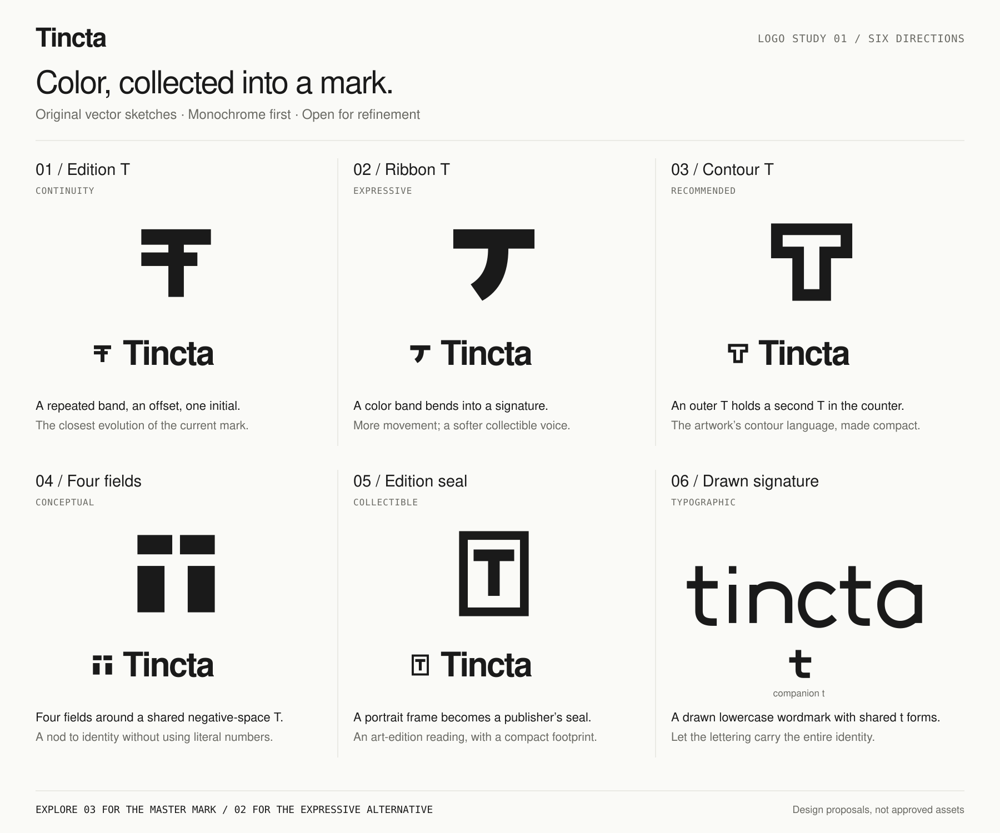
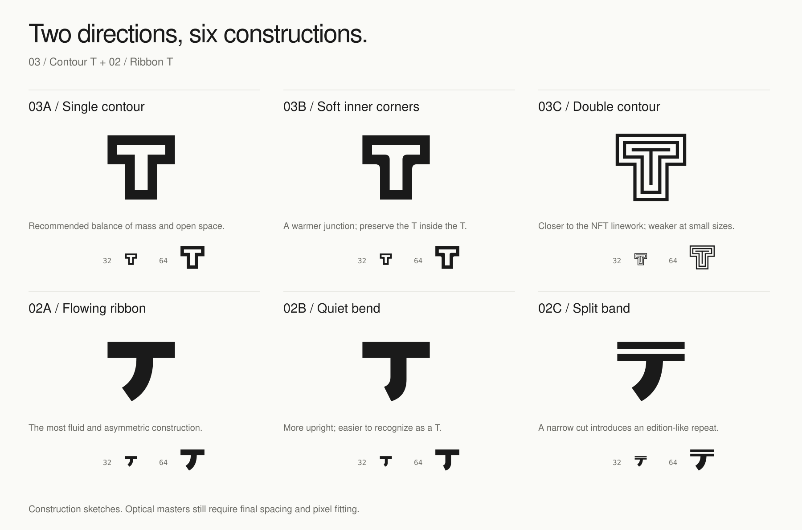
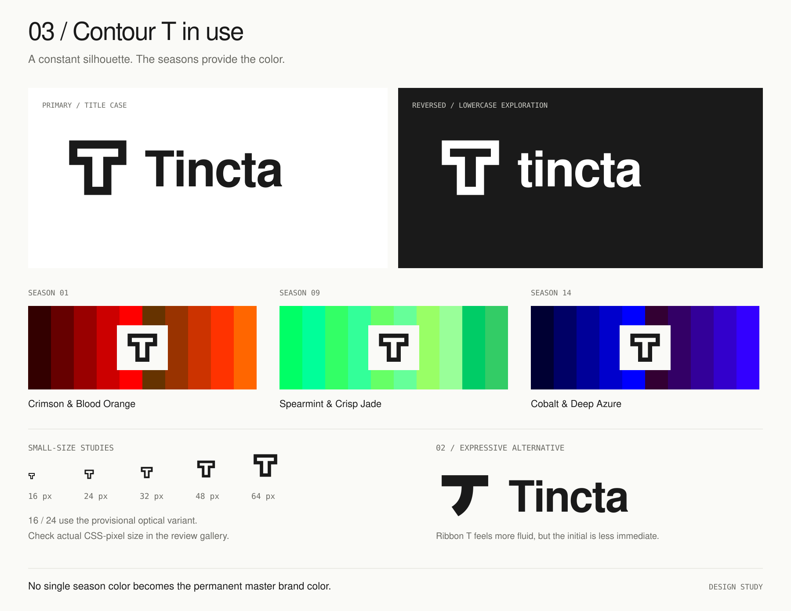

01 / Edition T
ContinuityTincta
A sequence of editions, collected into one initial.
To resolve: The stepped bars can still read as a technical or signal symbol.
Six original directions for a brand built around color, geometric art and permanent collectible identity. A stable mark across every season.
These are exploratory vector sketches. The existing white and ink identity, editorial typography and exact catalog palettes are the starting point. The mark should belong to Tincta across every collection, while the artwork retains its own seasonal character.
A sequence of editions, collected into one initial.
To resolve: The stepped bars can still read as a technical or signal symbol.
A color band turns into a flowing, asymmetric T.
To resolve: The curved stem can suggest an umbrella or a J before a T.
A T inside a T: a permanent identity surrounded by its edition.
To resolve: The internal channel needs optical adjustment below 24 px.
Four independent fields leave a shared T-shaped space.
To resolve: The symbol is more abstract; the upper split can make it read as a cross.
A compact portrait edition with an inset T, like a publisher’s seal.
To resolve: The surrounding frame is generic; it may compete with the NFT frame.
A bespoke lowercase signature with repeated t geometry and a square i dot.
To resolve: The wordmark cannot serve as a favicon; its t is only a provisional companion.
Sizes above are actual CSS pixels. At 16 and 24 px, the mark uses a provisional optical variant with wider open spaces. These are review specimens, not final pixel-fitted masters.
The outer T and inner T use the same silhouette, connecting the brand to repeated geometric contours without adopting one season’s motif. It feels steady beside both expressive artwork and practical product information.
Refine the counter, stem width and wordmark spacing. Keep 03A’s flat geometry as the starting point; the double contour is a study for larger artwork only.
The curved stem gives the identity movement and warmth. It is the useful alternative if the brand should feel more like a color-led art label.
Its main decision is recognition: do viewers immediately read a T? 02B tests a more upright stem. Review this alongside 03 before selecting a direction.



Let the logo express the collectible identity. The prize draw stays in clear product copy. Four-part geometry refers only to permanent identity, and does not encode winners, odds or a score. Seasonal palettes remain in their original order.
One master silhouette should work in black, white, a favicon, an avatar and a quiet NFT signature. Color is contextual. No single season’s motif or palette becomes the entire brand.
{kind=link}
{kind=link}
{kind=link}
{kind=link}
{kind=link}
{kind=link}
{kind=link}
{kind=link}
{kind=link}
{kind=link}